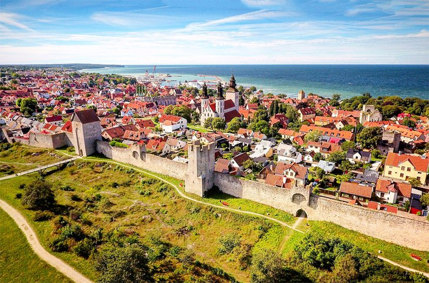

Visby är en stad full av liv på sommrarhalvåret och lite lugnare på vinterhalvåret. Passar mig perfekt! Jag är född och uppvuxen i Visby. Har alltid trivts på lilla Gotland även om jag har varit bosatt på fler platser genom mitt liv. Visby kommer alltid ligga mig varmt om hjärtat och det är alltid här jag kommer att hamna i slutändan även om jag hittar nya tillfälliga bostadsorter.
Jag har inte så mycket erfarenhet av utveckling och programmering. Jag har läst en gymnasiekurs i C#. Annars har jag mest pysslat lite på fritiden och försökt lära mig när jag har haft stunder över. Men det ska bli kul att äntligen ha tiden att grotta ner sig på riktigt!